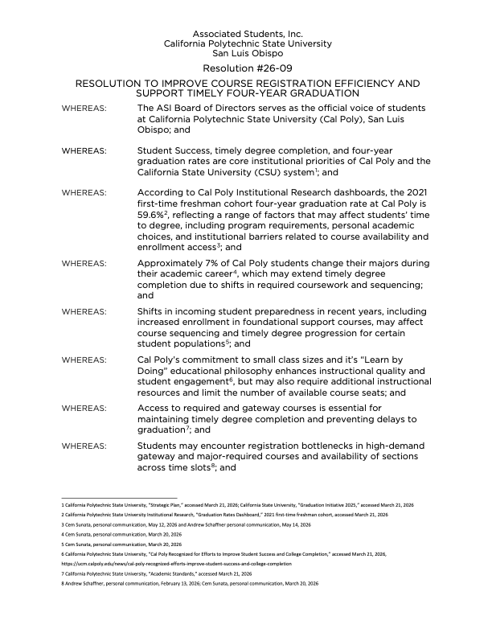
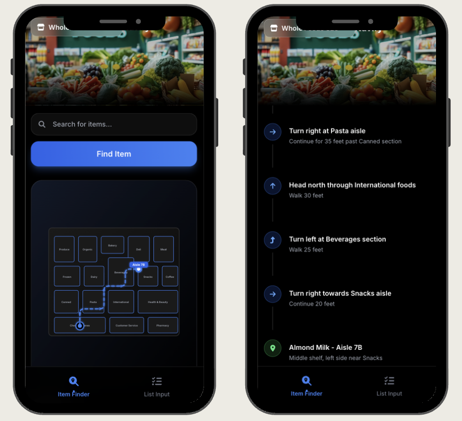

Portfolio
Explore My Work
Browse my strategy & design work, technical projects, and leadership initiatives.
Start by Category
Strategy & Design
Applied research, consulting projects, UI/UX work, marketing campaigns, and digital media
02 ↓Technical Projects
Live websites & applications, AI tools, dashboards, packages & repositories, and 3D engineering
03 ↓Leadership
Workshops, events, advocacy, nonprofit work, and local policy
Highlighted Work

Leadership & advocacy
Course Registration Reform ↗
I authored a board-adopted resolution calling for a closer look at the course bottlenecks that can delay graduation.

Product design & development
Navify ↗
I led the team behind an in-store navigation prototype that guides shoppers from a product search to the right shelf.
All Work
Strategy & Design
CodeGarden ↗
I led a team that turned user research into a coding education prototype and pitched it to a top-five finish at UX Fest SLO.
Navify retailer subscription model ↗
I helped develop three subscription tiers that pair shopper navigation with tools for retailers.
Professional Consulting Case Competition
In Spring 2027, my team will pitch a solution to an HR challenge to industry professionals.
Technical Projects
Navify in-store navigation ↗
Our prototype takes a shopper from item search to a store map and turn-by-turn aisle directions.
Portfolio website ↗
Explore the HTML and CSS behind this site, published with GitHub Pages.
Leadership
Course Registration Reform ↗
I worked with campus staff to identify scheduling bottlenecks and authored the resolution adopted by the ASI Board.
Iter8 product design workshops ↗
I teach UX twice a week and help aspiring designers take their work from research through a final portfolio showcase.
ASI campus engagement ↗
I lead outreach campaigns and recruit, train, and mentor incoming student leaders.